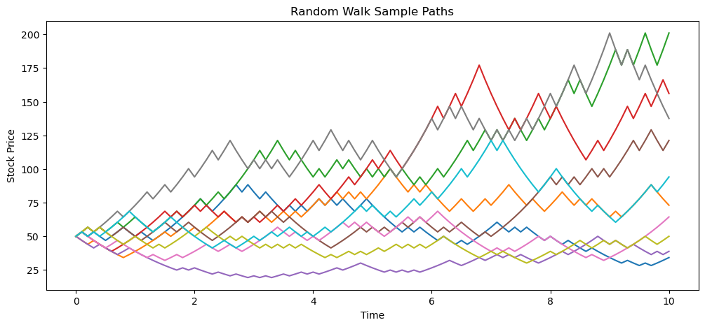
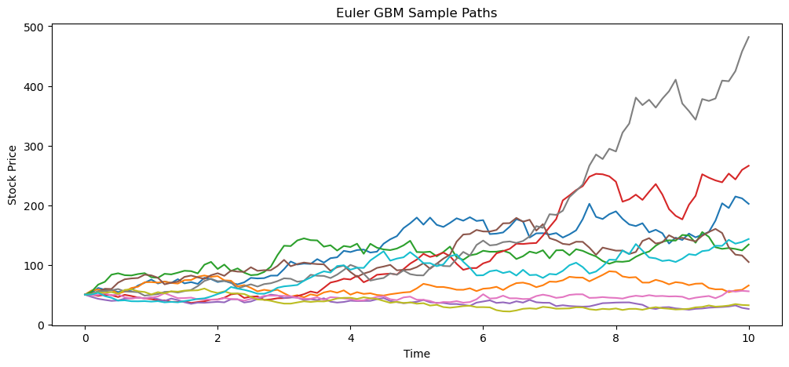
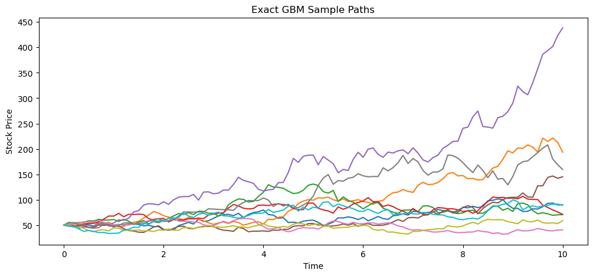

import numpy as np
import random
import matplotlib.pyplot as plt
def stockRandomWalk(
S0,
T,
r,
sigma,
n_paths = 1,
n_steps = 100,
seed = None
):
if seed is not None:
np.random.seed(seed)
dt = T/n_steps
u = np.exp(sigma * np.sqrt(dt))
d = 1/u
a = np.exp(r*dt)
p = (a-d) / (u-d)
bernoulli = np.random.binomial(n=1,p=p,size=(n_paths,n_steps))
moves = bernoulli * u + (1 - bernoulli) * d
prices = np.empty((n_paths,n_steps + 1))
prices[:,0] = S0
prices[:,1:] = S0 * np.cumprod(moves,axis=1)
return prices
def stockGbmEuler(
S0,
T,
r,
sigma,
n_paths = 1,
n_steps = 100,
seed = None
):
if seed is not None:
np.random.seed(seed)
dt = T/n_steps
sqrt_dt = np.sqrt(dt)
eps = np.random.normal(loc=0,scale=1,size=(n_paths,n_steps))
prices = np.zeros((n_paths,n_steps+1))
prices[:,0] = S0
prices[:,1:] = S0 * np.cumprod(1 + r*dt + sigma*eps*sqrt_dt,axis=1)
return prices
def stockGbmExact(
S0,
T,
r,
sigma,
n_paths = 1,
n_steps = 100,
seed = None
):
if seed is not None:
np.random.seed(seed)
dt = T/n_steps
sqrt_dt = np.sqrt(dt)
eps = np.random.normal(loc=0,scale=1,size=(n_paths,n_steps))
prices = np.zeros((n_paths,n_steps + 1))
prices[:,0] = S0
prices[:,1:] = S0 * np.cumprod(np.exp((r-sigma**2/2)*dt + (sigma*sqrt_dt*eps)),axis=1)
return pricesStock Price Behaviour and Assumptions in Black-Scholes-Merton and Binomial Tree
CPP Pricing Engine
Alejandro Naranjo Caraza
2026-03-01
Overview
The following presents the basic assumptions regarding stock price behaviour in option valuation. The Black-Scholes-Merton (BSM) model and the Binomial Tree model propose similar ideas regarding stock price fluctuations, but, while BSM is based on a continuous process (a Geometric Brownian Motion, specifically), the Binomial Model follows a discrete-time, discrete-state random walk.
Relevant Models
Stochastic Process
A stochastic process is a family of random variables
\{X(t) : t \in T\}
defined on a probability space, where the index set T typically represents time.
A stochastic process is called a continuous-time, continuous-state stochastic process if the index set T is continuous (e.g., T \subseteq \mathbb{R}) and each random variable X(t) takes values in a continuous state space (e.g., \mathbb{R}).
Random Walk
A discrete-time random walk can be defined as a stochastic process \{S_n : n=0,1,2,..\} where S_n is the sum of random independant and identically distributed random variables (steps) X_i: S_n = S_0 + \sum_{i=1}^{n}X_i
Note the the next position depends only on the previous one (Markov property): S_{n+1} = S_n + X_{n+1}.
Wiener Process / Brownian Motion
Real-valued continuous-time stochastic process \{W_t\}_{t \ge 0} with the following properties:
- W_0 = 0 almost surely.
- W has independent increments. For every t > 0, the future increments W_{t+u}-W_t,\quad u\ge 0, are independent of the past values W_s, s < t.
- W has Gaussian increments. For all u,t \ge 0, W_{t+u} - W_t \sim \mathcal{N}(0,u).
That is, a time step u results in an increment that is normally distributed with mean 0 and variance u. - W has almost surely continuous paths: W_t is almost surely continuous in t.
Generalized Weiner Process
A Generalized Weiner Process for a variable x can be defined dx = a dt + b dz where - z follows a Weiner Process - a and b are constants - The mean change per unit change in time (drift rate) is a - The variance per unit time is (variance rate) is b²
Ito’s Process
Generalization of Generalized Weiner Process: dx = a(x,t) dt + b(x,t) dz where a=a(x,t) and b=b(x,t) are deterministic function of (x,t).
Stock Price Behaviour Assumptions in Black-Scholes-Merton
Under BSM, stock price follows a Geometric Brownian Motion:
\begin{align} dS &= \mu S dt + \sigma S dz \\ \dfrac{dS}{S} &= \mu dt + \sigma dz \end{align}
Where
- S is the stock price
- t is the time variable (usually in years)
- z follows a standard Wiener process with drift rate 0 and variance rate 1
- \mu is the stock’s expected return
- \sigma is stock return volatility (\sigma² is the variance rate of the retun’s process)
Notice that, under this model, stock return follows a Generalized Weiner Process (dS = a dt + b dz). This is because investor’s expected return is independent of the stock’s price, meaning that constant expected price drift must be replaced by constant return.
Considering dz = 0 and integrating between time 0 and T yields $S_T = S_0 e^{T} $.
Also notice that BSM assumes consistent return uncertainty, independant of stock price, for periods of time of the same length (dt).
The discrete-time version of the model is: \begin{align} \Delta S &= \mu S \Delta t + \sigma S \epsilon \sqrt{\Delta t} \\ \dfrac{\Delta S}{S} &= \mu \Delta t + \sigma \epsilon \sqrt{\Delta t} \end{align} where \epsilon follows a standard normal distribution.
\Delta S / S is approximately normal: \Delta S / S \approx N (\mu \Delta t, \sigma² \Delta t)
It can be shown that the log return is exactly normal: \ln(\dfrac{S + \Delta S}{S}) \sim N ((\mu - \dfrac{1}{2}\sigma²)\Delta t, \sigma² \Delta t)
Stock Price Behaviour Under Binomial Model
Under the Binomial Model, stock price follows a discrete-time discrete-spce random walk. At each time step, the stock price S_n can either move up to S_{n+1}=u S_n or down to S_{n+1}=d S_n (with d<1, u>1). The probability of a price increase is p, while the probability of a decrease is 1-p.
This results in the following expected price at each time step: E[S_{n+1}] = p (u S_n) + (1-p) (d S_n).
Under the no-arbitrage assumption in the binomial model, the probability p in a risk-neutral framework is determined by p = \dfrac{e^{rT}-d}{u-d} where r is the risk-free rate.
John C. Cox, Stephen A. Ross, and Mark Rubinstein (CRR) Parameterization
The following parameterization is commonly adopted because it matches the volatility of the underlying asset and guarantees convergence of the binomial model to the Black–Scholes–Merton framework as \Delta t tends to zero. \begin{align} p &= \dfrac{a-d}{u-d}\\ u &= e^{\sigma\sqrt{\Delta t}}\\ d &= e^{-\sigma\sqrt{\Delta t}}\\ a &= e^{r\Delta t} \end{align}
where
- r is the risk-free rate
- \sigma is the stock return volatility
- a is the discount rate
Binomial Model Pseudocode
Given
S0 Initial stock price
dt Time step size
r Risk-free rate
sigma Volatility
T Number of time steps
Compute
u ← exp(sigma * sqrt(dt))
d ← 1 / u
a ← exp(r * dt)
p ← (a - d) / (u - d)
Initialize
S[0] ← S0
For t ← 0 to T-1 do
Simulate X ~ Bernoulli(p)
If X = 1 then
S[t+1] ← S[t] * u
Else
S[t+1] ← S[t] * d
End ForS0 = 50
T = 10
r = 0.1
sigma = 0.2
n_paths = 10
n_steps = 100
p0 = stockRandomWalk(S0,T,r,sigma,n_paths,n_steps)
p1 = stockGbmEuler(S0,T,r,sigma,n_paths,n_steps)
p2 = stockGbmExact(S0,T,r,sigma,n_paths,n_steps)time = np.linspace(0, T, n_steps + 1)
plt.figure(figsize=(12, 5))
plt.plot(time, p0.T)
plt.title("Random Walk Sample Paths")
plt.xlabel("Time")
plt.ylabel("Stock Price")
plt.show()
plt.figure(figsize=(12, 5))
plt.plot(time, p1.T)
plt.title("Euler GBM Sample Paths")
plt.xlabel("Time")
plt.ylabel("Stock Price")
plt.show()
plt.figure(figsize=(12, 5))
plt.plot(time, p2.T)
plt.title("Exact GBM Sample Paths")
plt.xlabel("Time")
plt.ylabel("Stock Price")
plt.show()